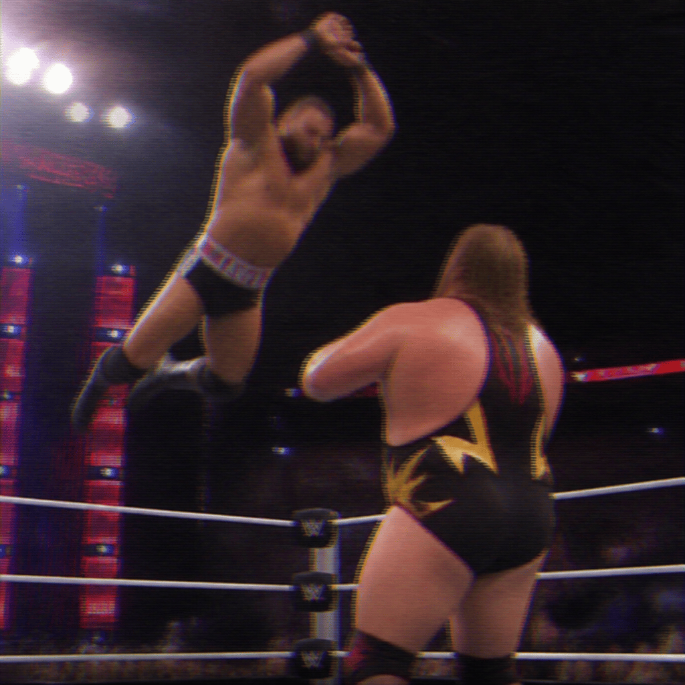

2026/10/26(月)
アベマ・試合結果速報！
○イヨ・スカイ (16分45秒 ひざ蹴り) ミチン●
○マキシン・デュプリ (21分30秒 ボディスラム) ジェイド・カーギル●
○ルセフ (18分22秒 ストレッチ・マフ・バル) オーティス●
○ナオミ (24分10秒 ダイブ) パイパー・ニーヴェン●
○Rトゥルース (12分15秒 フリップ・フロップ) ブルータス・クリード●
○パイパー・ニーヴェン (22分05秒 リバース・スープレックス) アイビー・ナイル●
○カイリ・セイン (19分50秒 インセイン・エルボー) イヨ・スカイ●
○ジェフ・コブ (14分35秒 ツアー・オブ・ジ・アイランド) ディック東郷●
○辻陽太 (17分28秒 ジャンピング・ニークラッシャー) ウルフアロン●
○イヨ・スカイ (20分55秒 ティア・ドロップ) ニッキー・クロス●
○中邑真輔 (23分11秒 キングシャッツ) El Grande Americano●
○カラム・ニューマン (15分40秒 コスモ・カッター) ジミー・ウーソ●
Thank you for Watching !

「(イヨ・スカイ vs ニッキー・クロス)」